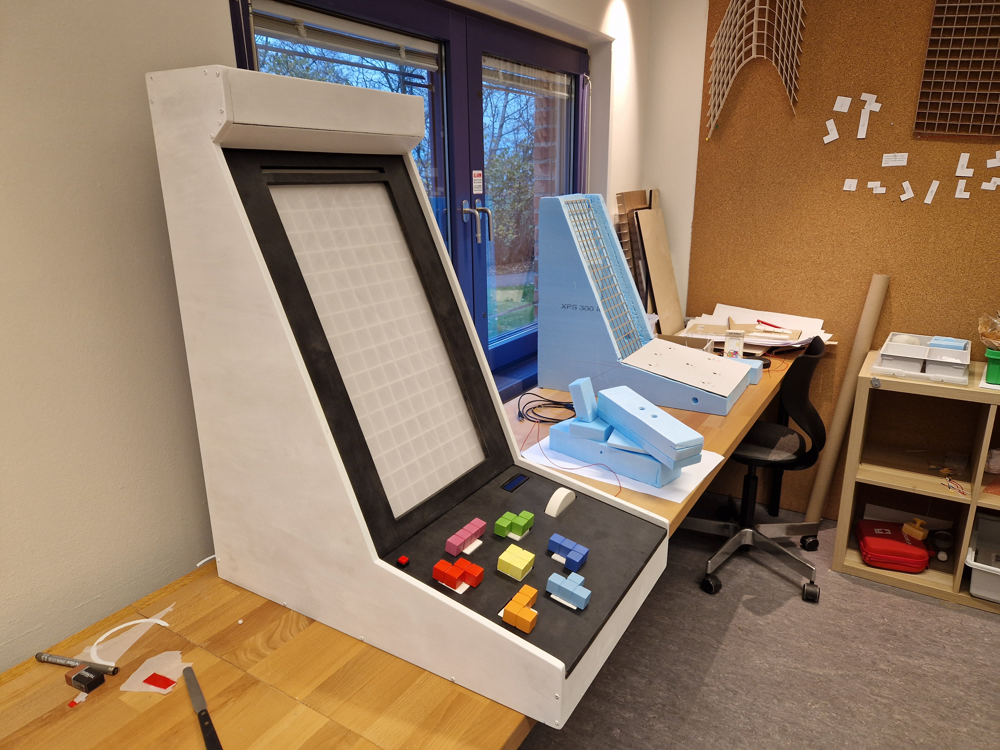
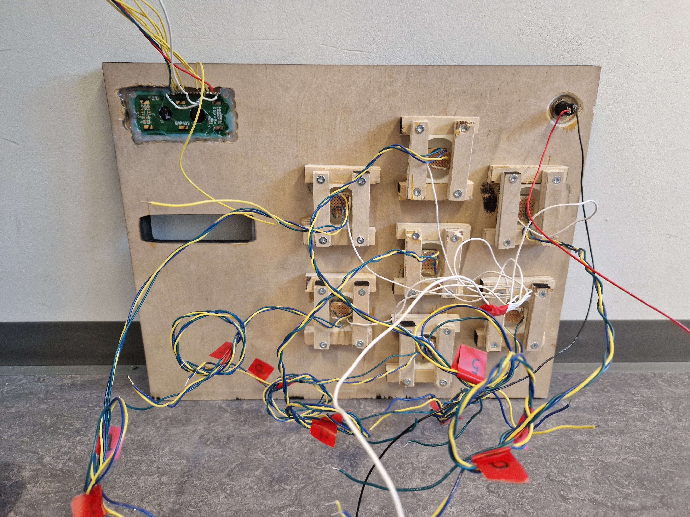

Rotatris — Tangible Controls for Tetris
Rotatris is a tangible Tetris controller built into an arcade-style cabinet, featuring seven 3D-printed, color-coded tetromino pieces that physically rotate to control their in-game counterparts. Developed as a 5th-semester Interactive Physical Design project, it explores embodied interaction and spatial skill engagement through iterative prototyping and user testing.
Project Details
Rotatris is a custom physical controller for Tetris that I worked on as part of a 5th-semester Interactive Physical Design course at Aalborg University. The big question driving the project was simple but fun to explore: what if instead of pressing buttons to rotate Tetris pieces, you actually picked up and rotated the pieces themselves?
The idea at the heart of Rotatris is seven 3D-printed, color-coded tetromino pieces, one for each shape in the game, each sitting on a rotary encoder that snaps satisfyingly into 90-degree positions using magnets. Twist a physical piece, and its in-game counterpart rotates to match. A scroll wheel off to the side handles left-right movement, and the whole thing lives inside a handbuilt arcade cabinet with an 8x16 LED grid as the screen. A strip of colored LEDs above the grid gives you a heads-up on which piece is coming next, so you can pre-rotate the right controller piece before it even drops.
We built the project across two main iterations, which kept things honest. Each round of making was followed by actual user testing that shaped what came next. The first version was rough around the edges: cardboard cabinet, basic wiring, and no tactile feedback on the rotating pieces. Testing revealed pretty quickly that players wanted to feel something when a piece clicked into place, and that color-matching between the physical pieces and the on-screen game was non-negotiable for the controls to feel natural.
The second iteration tackled all of that head-on. The highlight was a custom two-part magnetic block mechanism that we iterated through several versions to get right. It needed to snap audibly at each 90-degree turn while still letting players press down on the piece to fast-drop, and getting both of those to coexist took some creative problem-solving. The cabinet also got a proper upgrade: laser-cut plywood, spray-painted white outside and black inside so the colorful tetromino pieces really pop. We added a scroll wheel, a score display, and an on/off switch to round things out.
When we brought the finished prototype out for a second round of testing, the response was genuinely encouraging. Most players got the hang of the controls almost immediately, the wheel got unprompted praise from the majority of participants, and nobody complained about missing tactile feedback this time, which was a real turnaround from the first round. The main blemish was a stubborn software bug that occasionally broke the physical-to-digital rotation mapping, which we weren't able to fully squash in time. It was frustrating but honest, and it's the first thing on the list for a future iteration.
On the technical side, the project touched a lot of ground: Arduino Mega programming with interrupt-driven encoder input, custom PCB soldering, SolidWorks modeling, laser cutting, and a lot of iterative 3D printing. It was as much a hardware and fabrication project as a software one, which made it a really satisfying thing to build from scratch.
Image Gallery

The fianl version besides the testing prototype.
A look at the backside of controller panel